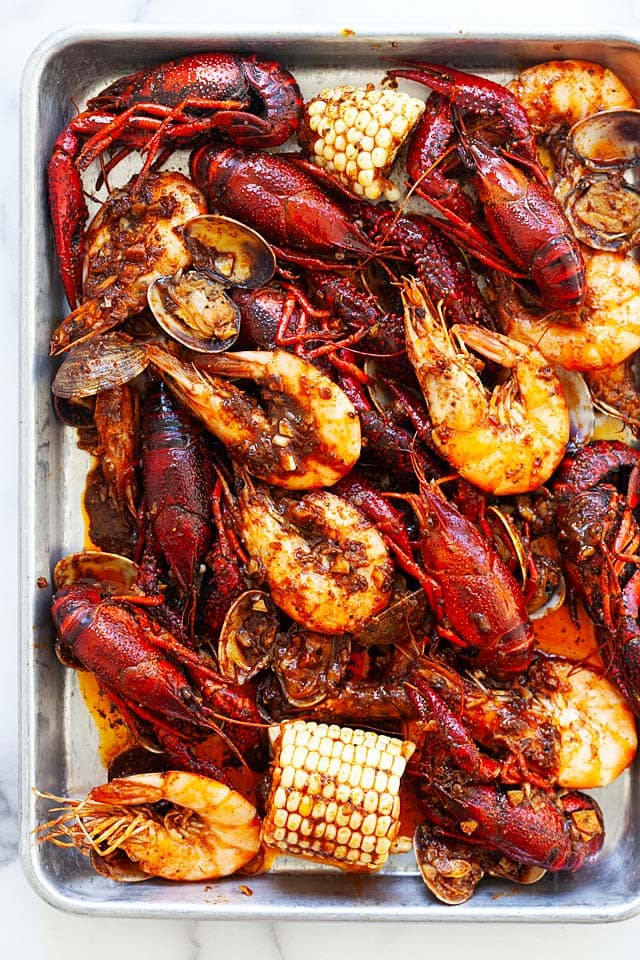

Seafood Boil

Seafood Boil is a delicious, spicy cajun style food. There are different variations of this boil but the seafood boil mixes them together into one!
If you enjoy spicy seasoning and seafood, this is an amazing meal to try. Make sure you use a big pot to fit it all together.
Ingredients
- 1 lb. (0.4 kg) head-on and shell-on shrimp, rinsed
- 1 lb. (0.4 kg) crawfish, rinsed
- 1 lb. (0.4 kg) Manila clams, rinsed and scrubbed
- water, for boiling
- 1 lemon, halved
- 2 ears corn, cut off the cob into 2-inch pieces
- 2 sticks (225 g) unsalted butter, melted
- 2 heads garlic, peeled and minced
- 2 tablespoons Louisiana hot sauce
- 4 tablespoons Old Bay seasoning
- 2 tablespoons smoked paprika
- 1 tablespoon cayenne pepper
- 1 tablespoon ground black pepper
- 2 1/2 tablespoons sugar
Instructions
- Rinse the shrimp with water, Use a pair of scissors to cut off the mustache and legs. Set aside. Soak the crawfish in water and rinse a few times until the water becomes clear. Rinse and scrub the Manila clams. Drain and set aside.
- Combine all the ingredients of the Seafood Boil Seasoning in a bowl. Stir to mix well. Set aside.
- Fill a large stockpot halfway with water and bring to a boil. Add the lemon halves, follow by the shrimp, crawfish, Manila clams and corns. Cover the stockpot and cook the seafood and corns until they turn red or cooked through, about 2 minutes. Drain the seafood and corns, discard the water and lemon. Set aside.
- While the seafood is cooking, in a big skillet over medium heat, add the butter and stir in the minced garlic. Saute the garlic for 1 minute (not brown). Add the Seafood Boil Seasoning and Louisiana hot sauce. Stir to mix the spicy butter sauce well. Turn off the heat.
- Transfer the seafood and corn into the spicy sauce, stir to combine well. If you have a small skillet, mix the butter sauce and the seafood in two batches. Serve immediately.